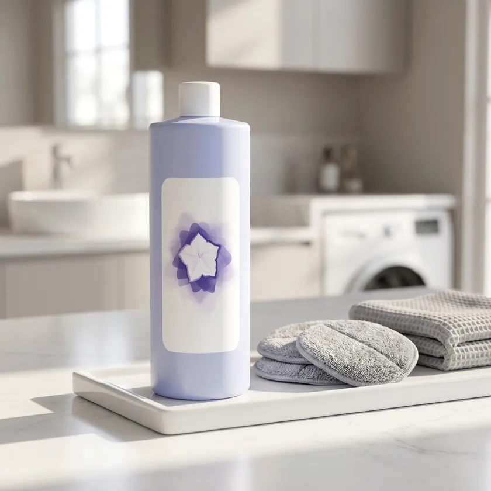
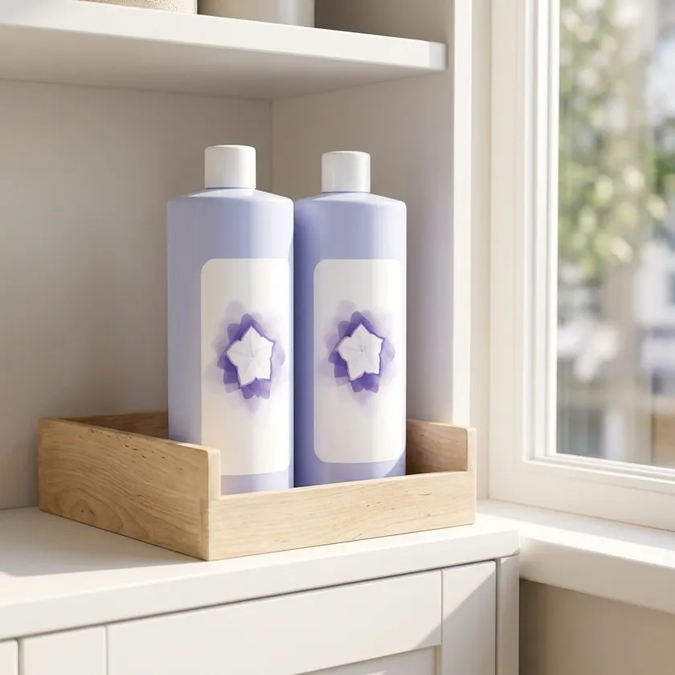

에코백스 (ECOVACS)
에코백스 DEEBOT 전용 세제 1L 보충 전, 투입 방식 확인과 1병·2병 선택
글·구성: 제이상점 · 기종별 1:1 호환 실물 점검 · 교체 주기 비교표 · 스마트스토어 패키지 안내

핵심 관리 · 선택 체크포인트
- 에코백스 정품 세제 1L 옵션별 구성과 확인 기준: 대용량 1L 원통형 병 규격으로, 스테이션 투입 방식과 청소 주기에 따라 수량을 선택할 수 있습니다.
- 제품군 구분과 정수통 투입 기준을 미리 확인해 두세요: 비슷한 이름의 에코백스 세정액을 구분하는 법은 에코백스 세제 구매 전 DEEBOT과 WINBOT 구분하기에서, 옴니 스테이션 물통에 넣을 때 주의할 점은 T80 OMNI·X8 PRO OMNI 세정액 정수통 사용 전 확인사항에서 차례대로 살펴보실 수 있습니다.
- 캡 밀폐 상태와 해외직배송 일정을 함께 점검하세요: 사용 후에는 뚜껑 나사산 주변에 묻은 액체를 닦아 똑바로 세워 보관하면 다음 리필 때도 깔끔합니다. 현재 판매 중인 구성은 에코백스 정품 세제 1L 1병·2병(복수구매할인) 상세 페이지에서 확인해 보세요.
- 제이상점의 중국 구매대행·해외직배송 상품 특성상 주문 후 통관·배송 기간이 소요되므로 현재 쓰시는 병이 절반 이하로 줄었을 때 천천히 준비해 두시면 좋습니다.
실물 부품 디테일 · 관리 구성 이미지


부품 규격 · 점검 기준표
| 선택 옵션명 | 용량 및 수량 | 주문·사용 전 확인 사항 |
|---|---|---|
| 1L - 1병 | 1L 정품 세정제 1병 | 보유 기종이 DEEBOT 바닥 청소 라인업인지와 설명서의 권장 투입 비율 확인 |
| 1L - 2병 (복수구매할인) | 1L 정품 세정제 2병 묶음 | 넓은 거실 물걸레 세척이 잦아 1L 여분 한 병을 상비해 두려는 가정 |
💡 교체 주기가 겹치는 필터·브러시·물걸레·더스트백은 단품 배송비를 여러 번 내기보다 에코백스 세제 세정제 기간별 세트(3개월·6개월·1년)로 미리 구비해 두면 물세척 후 24시간 교대 건조까지 끊김 없이 관리할 수 있습니다.
자주 묻는 질문 (FAQ)
Q. T80OMNI의 1L - 1병 규격과 관리 기준은 무엇인가요?
A. 1L 정품 세정제 1병 규격을 사용하며, 보유 기종이 DEEBOT 바닥 청소 라인업인지와 설명서의 권장 투입 비율 확인 기준으로 점검·교체하면 청소 효율을 안정적으로 유지할 수 있습니다.
Q. T80OMNI의 1L - 2병 (복수구매할인) 규격과 관리 기준은 무엇인가요?
A. 1L 정품 세정제 2병 묶음 규격을 사용하며, 넓은 거실 물걸레 세척이 잦아 1L 여분 한 병을 상비해 두려는 가정 기준으로 점검·교체하면 청소 효율을 안정적으로 유지할 수 있습니다.
제이상점 1:1 검수 추천 패키지 · 구매 안내
☑️ 주문 전 확인해 두면 좋은 제이상점 안심 포인트
· 기종별 1:1 전용 규격 검수: 모델명·연식에 맞는 호환·정품 구성을 검수해 오주문 불안을 줄였습니다.
· 해외직배송 미리 주문 팁: 중국 구매대행·해외직배송 상품이므로 마지막 여분 1개를 꺼내 쓰는 시점에 개인통관고유부호와 함께 여유 있게 주문해 두시면 훨씬 경제적인 비용으로 끊김 없이 교체하실 수 있습니다.
· 기종별 1:1 전용 규격 검수: 모델명·연식에 맞는 호환·정품 구성을 검수해 오주문 불안을 줄였습니다.
· 해외직배송 미리 주문 팁: 중국 구매대행·해외직배송 상품이므로 마지막 여분 1개를 꺼내 쓰는 시점에 개인통관고유부호와 함께 여유 있게 주문해 두시면 훨씬 경제적인 비용으로 끊김 없이 교체하실 수 있습니다.
📖 더 많은 가정 내 사용 스토리와 상세 후기가 궁금하시다면
📱 네이버 블로그 모바일 원문 보기 ↗